El proceso de instalación que a continuación se describe está relacionado al sistema operativo Debian 9 y se realiza a través de los repositorios del mismo, para poder instalar CACTI en otro sistema por favor consulta el manual de CACTI
Requerimientos
CACTI requiere que el siguiente software este instalado en el sistema:
Ingresa el comando apt-get install mysql-server en la terminal 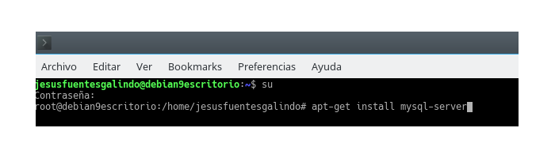
Mientras la instalación se realiza, te solicitara una contraseña para el usuario root de MySQL
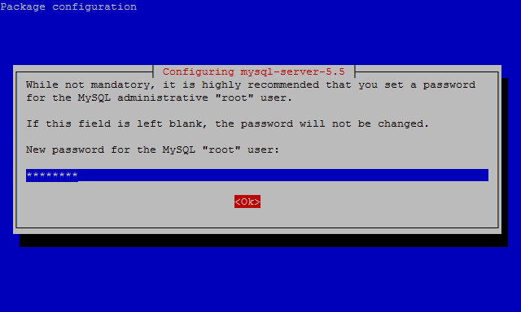
Te solicitara que reingreses la contraseña
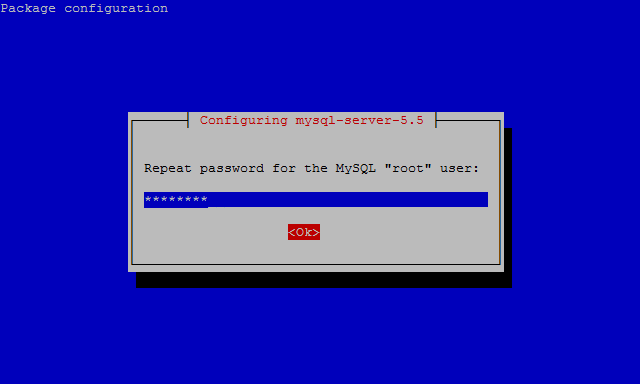
Despues de esto MySQL estara instalado. Para comprobar que MySQL ya se encuentra habilitado
escribe en la terminal: service mysql status. Si todo salio
bien en pantalla veras Active: active (running)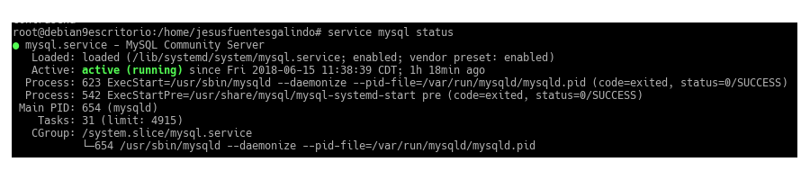
Listo, MySQL ya se encuentra instalado
Instalación del servidor Web Apache
Detalle de instalación
La versión de MySQL que viene por omisión en los repositorios de Debian 9 es la 2.4.25-3+deb9u4
Para instalar Apache en tu sistema:
Abre una terminal y accede como root
Ingresa el comando apt-get install apache2 en la terminal 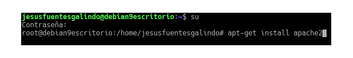
Espera a que el proceso de instalación se complete. Una vez terminado para comprobar que Apache
se encuentra instalado y habilitado ingresa en la terminal: service apache2 status
Si todo salio bien en pantalla veras Active: active (running)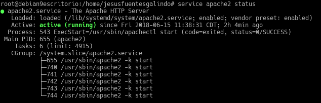
Listo, Apache ha sido instalado
Instalación del modulo de programación PHP
Detalle de instalación
La versión de PHP que viene por omisión en los repositorios de Debian 9 es la 5.0 o 7.0, para este caso
se instalo la versión 7.0
Para instalar PHP en tu sistema:
Abre una terminal y accede como root
Ingresa el comando apt-get install libapache2-mod-php7.0 en la terminal 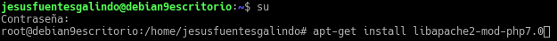
Espera a que el proceso de instalación se complete. Una vez terminado para comprobar que PHP
se encuentra instalado y habilitado:
Crea un archivo de texto con tu editor favorito y escribe:
<html>
<body>
<?php
phpinfo();
?>
</body>
</html>
Guarda el archivo con la extensión .php en el directorio
/var/www/html/
Abre tu explorador favorito y en la barra de direcciones ingresa localhost/"nombreArchivo".php
si todo slaio bien veras una pantalla como la siguiente.
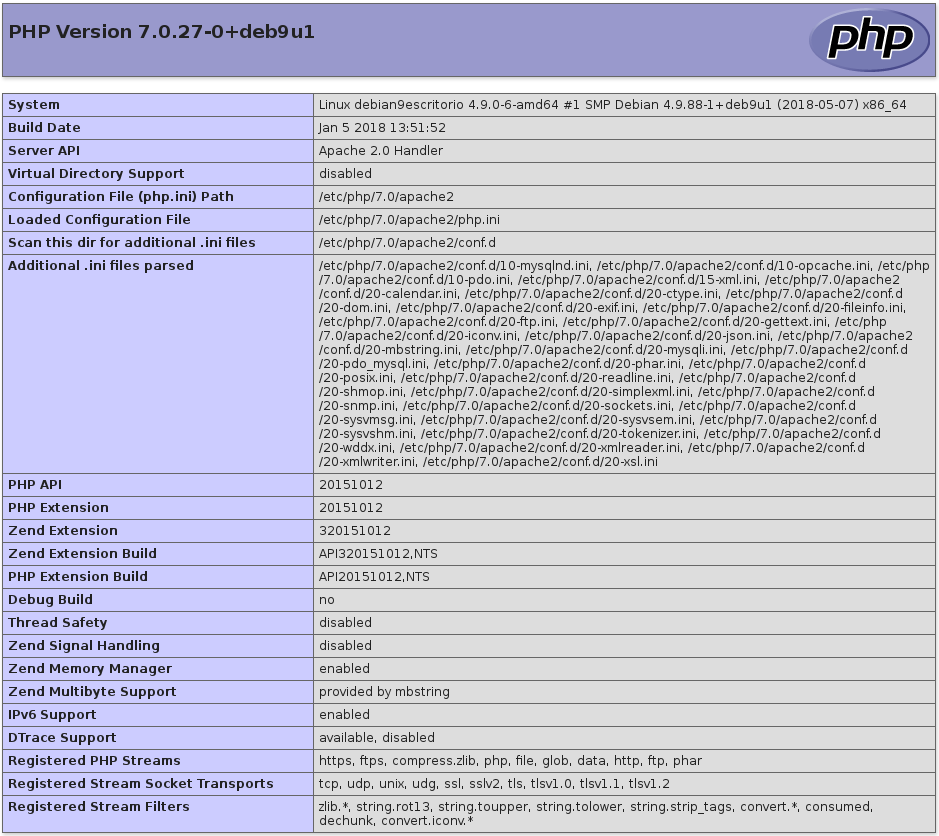
Listo, PHP ha sido instalado
Instalación de la herramienta CACTI
Detalle de instalación
La versión de CACTI que viene por omisión en los repositorios de Debian 9 es la 0.8.8h+ds1-10
Para instalar CACTI en tu sistema:
Abre una terminal y accede como root
Ingresa el comando apt-get install cacti en la terminal 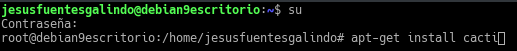
Seleccionamos el servidor HTTP que se instalo en el equipo, en nuestro caso Apache 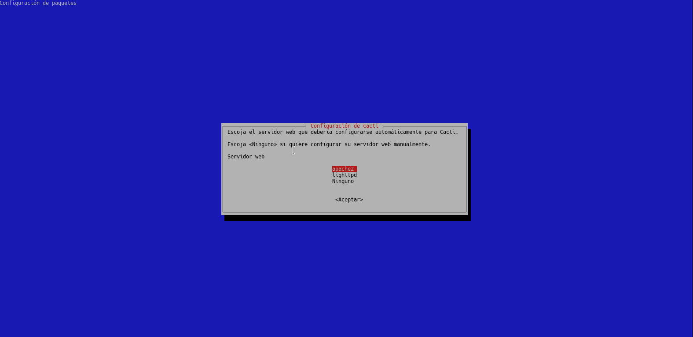
Utilizamos el programa de configuración de Debian para configurar la base de datos de CACTI, selecciona si y pulsa enter para continuar.
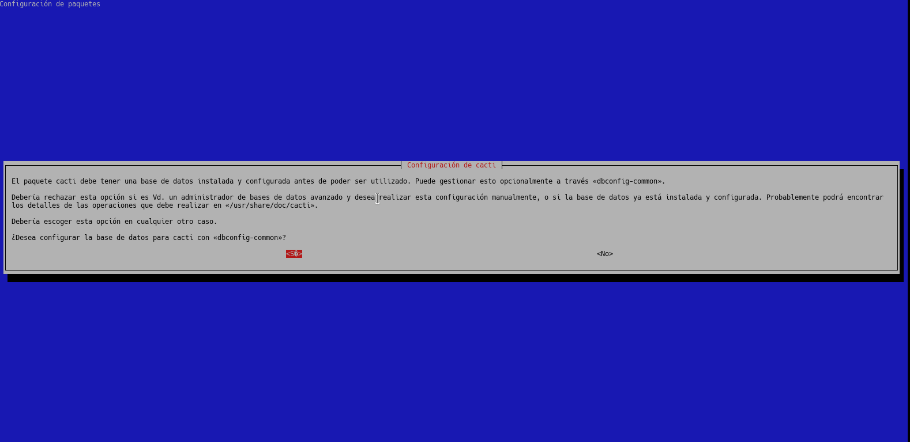
Ingresa la contraseña que se asignara al usuario de CACTI en la base de datos MySQL 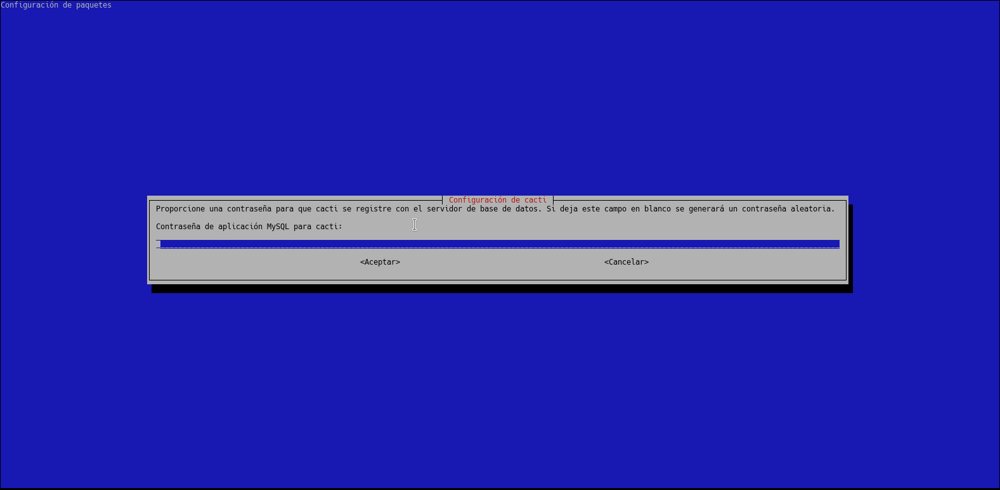
Ingrese de nuevo la contraseña para confirmar 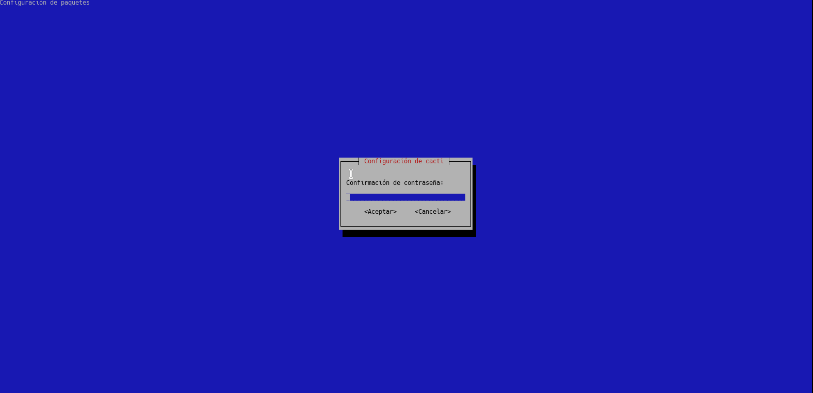
Ingrese la contraseña del usuario root de MySQL para que CACTI pueda crear la base de datos. 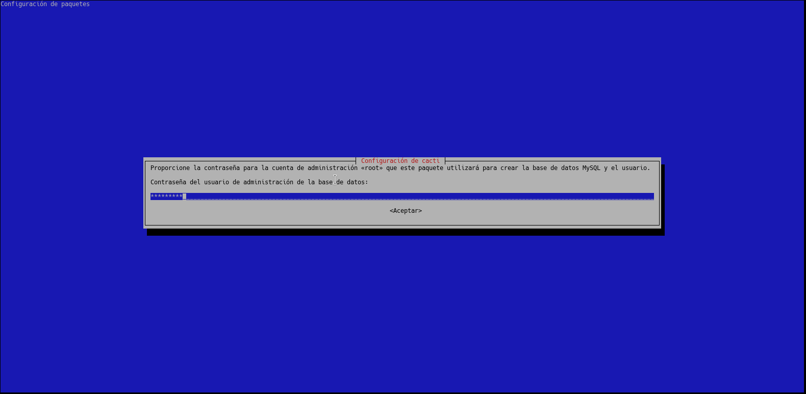
Espera a que la instalación se complete, para validar que se instalo de forma correcta CACTI, difigete a el explorador de tu elección e
introduce en la barra de direcciones del navegador: localhost/cacti/ si la instalación fue exitosa te aparecera la página de login de CACTI. 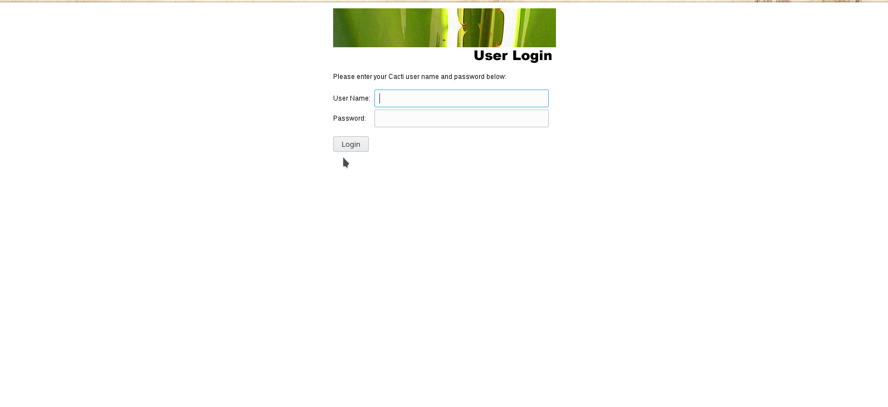